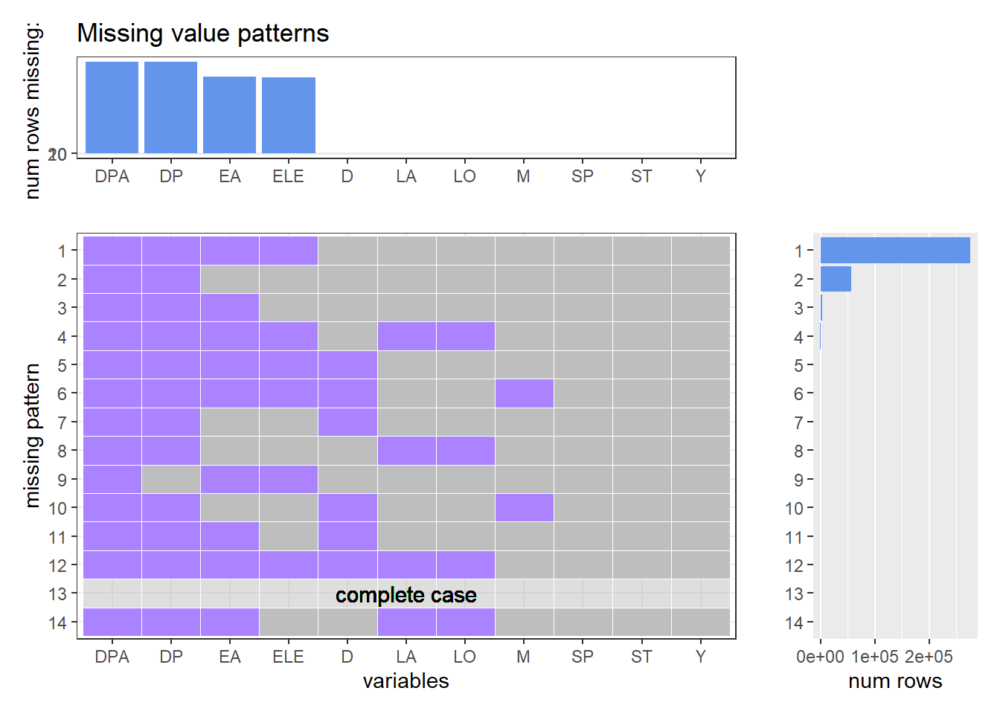

Chapter 4 Missing values
define a function which can be used to analyze our data
import data and purge it simply
visualize the missing pattern  Observing the plot, we can easily find out some correlations among some factors. LA means latitude and LO means longitude, so if one of them is missing, the other one must be missing too. The plot reveals this correlation. In addition, DPA means deep accuracy and DP means depth, if depth exists, depth accuracy has much probability to exist. The similar correlation also appears between EA(elevation accuracy) and ELE(elevation). Another correlation is among Y(year), M(month) and D(day). Year is more easily be recorded, rather than month and day.
DA, DP, EA, ELE are more likely to be missing, because few plants need to be recorded these information. For example, we may need to record deep of marine plants. But we wouldn’t record deep of terrestrial plants. And it is easier to record terrestrial plants and the amount of terrestrial plants is bigger. It is similar for elevation, since researchers may record the elevation when the plants are living in the mountains.
SP, ST, Y has no missing at all. That’s because SP(species) is somehow a index for the data. ST(state) and Y(year) is much easier to record.